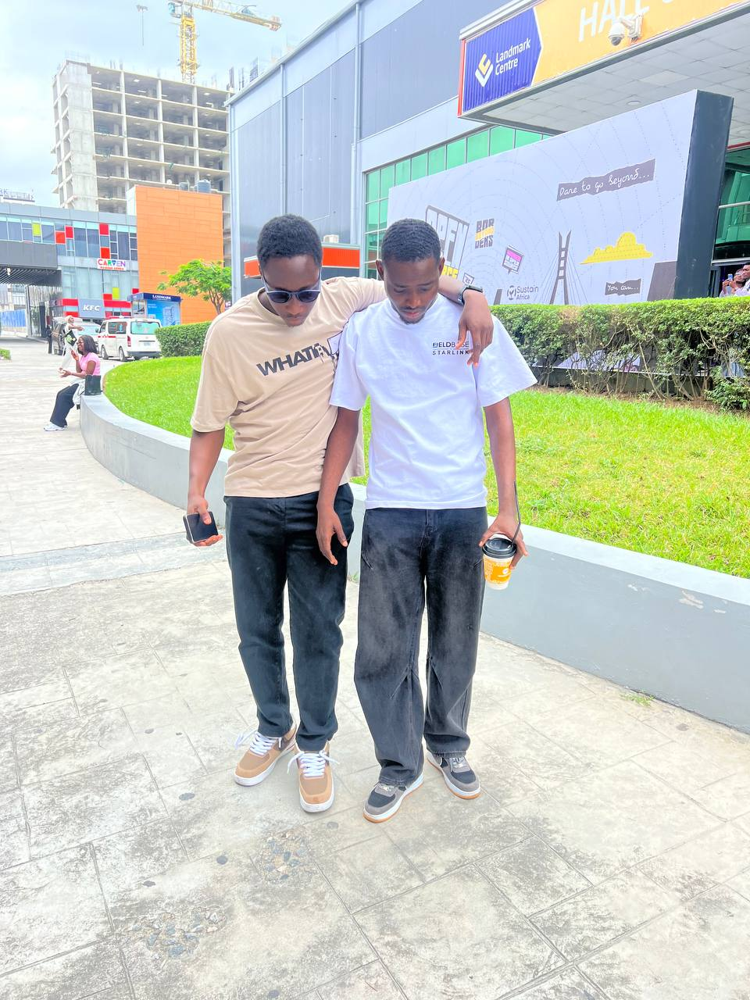

Alalade Jeremiah Seyi

Summary
I'm a Ux Designer and Frontend Developer, i'm very enthutiastic to work and dedicated. I started off in graphic designs by designinglogos and flyer for small brands
Education
- Primary 1-6 @ Spring Citadel Int'l School
- Secondary (JSS 1- SSS3) @ Mawo Int'l School
- Bachelor of Science, Software Engineering @ Osun State University
Work Experience
Skills
- Visual storytelling & communication
Digital design (social media, ads, websites, UI elements)
- Print design (brochures, posters, packaging)
- Illustration & icon design
- Branding & identity design
- Color theory & psychology
- Layout & composition (balance, alignment, spacing)
Awards and Certification
- D&AD Awards (Design & Art Direction) – UK-based, one of the most respected in design + advertising
- ADC Awards – global recognition for art direction, branding, typography, and graphic design.
- AIGA Design Awards – from the American Institute of Graphic Arts, celebrates design excellence.
Others